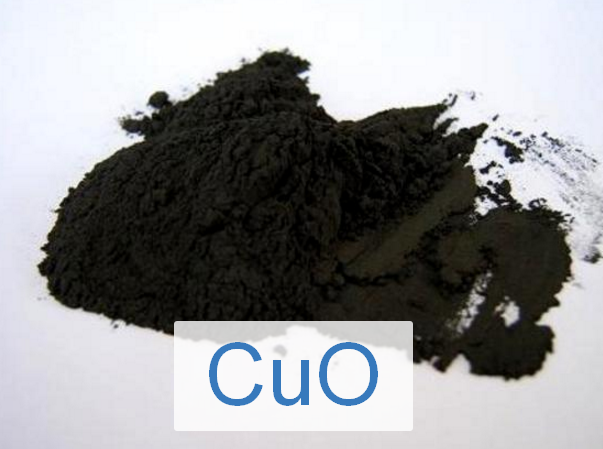

Свойства оксидов
Темы кодификатора ЕГЭ: Классификация и номенклатура оксидов. Характерные химические свойства основных, амфотерных и кислотных оксидов. Способы получения.
1. Классификация оксидов
Оксиды — это сложные вещества, состоящие из двух элементов, одним из которых является кислород в степени окисления -2.
Оксиды делятся на две большие группы:
- Солеобразующие: при взаимодействии с кислотами или основаниями образуют соли.
- Основные оксиды: оксиды металлов с валентностью I, II (кроме Zn, Be, Sn, Pb). Пример: Na₂O, CaO, CuO.
- Кислотные оксиды: оксиды неметаллов (кроме несолеобразующих) и металлов с валентностью V, VI, VII. Пример: SO₂, P₂O₅, Mn₂O₇.
- Амфотерные оксиды: оксиды, проявляющие как кислотные, так и основные свойства. Пример: ZnO, BeO, Al₂O₃, Fe₂O₃, Cr₂O₃, PbO.
- Несолеобразующие (безразличные): не образуют солей. Их всего четыре основных: CO, NO, N₂O, SiO.
2. Физические свойства оксидов
Оксиды могут находиться в различных агрегатных состояниях и иметь разнообразную окраску.
| Формула | Название | Физические свойства (Агрегатное состояние, цвет) | Фото |
|---|---|---|---|
| Основные оксиды | |||
| CaO | Оксид кальция (Негашеная известь) |
Белое тугоплавкое кристаллическое вещество. |

|
| CuO | Оксид меди(II) | Кристаллы черного цвета, нерастворимы в воде. |  |
| Na₂O | Оксид натрия | Бесцветные кристаллы. |

|
| FeO | Оксид железа(II) | Черный порошок. |

|
| MgO | Оксид магния (Жженая магнезия) |
Белый легкий порошок, тугоплавкий. |

|
| Амфотерные оксиды | |||
| ZnO | Оксид цинка | Белый порошок (желтеет при нагревании). |

|
| Al₂O₃ | Оксид алюминия (Корунд, глинозем) |
Белые тугоплавкие кристаллы, очень твердые. |

|
| Fe₂O₃ | Оксид железа(III) (Красный железняк) |
Красно-коричневый порошок. |

|
| Cr₂O₃ | Оксид хрома(III) | Тунгоплавкий порошок зеленого цвета. |

|
| PbO | Оксид свинца(II) (Глёт) |
Кристаллы желтого или красного цвета. |

|
| Кислотные оксиды | |||
| CO₂ | Оксид углерода(IV) (Углекислый газ) |
Бесцветный газ, без запаха, тяжелее воздуха. |
Фото
|
| SO₂ | Оксид серы(IV) (Сернистый газ) |
Бесцветный газ с резким запахом загорающейся спички. |
Фото
|
| SO₃ | Оксид серы(VI) | Бесцветная летучая жидкость (при t < 17°C твердеет). |

|
| NO₂ | Оксид азота(IV) (Лисий хвост) |
Бурый газ с резким запахом, ядовит. |

|
| P₂O₅ | Оксид фосфора(V) | Белый гигроскопичный порошок (жадно поглощает воду). |

|
| SiO₂ | Оксид кремния(IV) (Кремнезём, песок) |
Твердое, тугоплавкое вещество, бесцветное или окрашенное примесями. |

|
| CrO₃ | Оксид хрома(VI) | Ярко-красные (малиновые) кристаллы, гигроскопичны, сильный окислитель. |

|
| Mn₂O₇ | Оксид марганца(VII) | Зеленовато-бурая маслянистая жидкость, взрывоопасна. |

|
| N₂O₅ | Оксид азота(V) | Бесцветные летучие кристаллы. |
Фото
|
| N₂O₃ | Оксид азота(III) | При охлаждении синяя жидкость |

|
| Cl₂O₇ | Оксид хлора(VII) | Бесцветная маслянистая жидкость. |
Фото
|
3. Получение оксидов
1. Взаимодействие простых веществ с кислородом
1.1. Окисление металлов: Большинство металлов окисляются до устойчивых степеней окисления.
- 4Al + 3O₂ t°→ 2Al₂O₃
- 2Mg + O₂ t°→ 2MgO
- 2Cu + O₂ t°→ 2CuO
- Важно: Щелочные металлы образуют пероксиды (Na₂O₂) или надпероксиды (KO₂):
2Na + O₂ → Na₂O₂
K + O₂ → KO₂ - Для получения оксидов щелочных металлов используют косвенные методы (например, нагревание пероксида
с металлом):
Na₂O₂ + 2Na t°→ 2Na₂O - Железо образует железную окалину (смешанный оксид):
3Fe + 2O₂ t°→ Fe₃O₄ - Не реагируют с кислородом: Au, Pt, Pd, Ag (при обычных условиях).
1.2. Окисление неметаллов:
- Фосфор:
Избыток O₂: 4P + 5O₂ t°→ 2P₂O₅
Недостаток O₂: 4P + 3O₂ t°→ 2P₂O₃ - Сера: Горит только до SO₂:
S + O₂ t°→ SO₂ (для получения SO₃ нужен катализатор) - Углерод:
C + O₂ (изб.) t°→ CO₂
2C + O₂ (нед.) t°→ 2CO - Кремний: Si + O₂ t°→ SiO₂
- Азот: Окисляется только при высокой температуре (~2000°C) или электроразряде:
N₂ + O₂ 2000°C⇄ 2NO - Фтор, хлор, бром и инертные газы с кислородом не реагируют.
2. Окисление бинарных соединений
- Сульфиды:
4FeS₂ + 11O₂ t°→ 2Fe₂O₃ + 8SO₂ (обжиг пирита)
2ZnS + 3O₂ t°→ 2ZnO + 2SO₂ (обжиг цинковой обманки)
2PbS + 3O₂ t°→ 2PbO + 2SO₂ - Сероводород:
2H₂S + 3O₂ (изб.) t°→ 2H₂O + 2SO₂
2H₂S + O₂ (нед.) t°→ 2H₂O + 2S - Аммиак:
Без катализатора (горение): 4NH₃ + 3O₂ t°→ 2N₂ + 6H₂O
С катализатором (Pt): 4NH₃ + 5O₂ Pt, t°→ 4NO + 6H₂O - Гидриды (силаны, углеводороды):
CH₄ + 2O₂ t°→ CO₂ + 2H₂O
SiH₄ + 2O₂ t°→ SiO₂ + 2H₂O - Фосфин: 2PH₃ + 4O₂ t°→ P₂O₅ + 3H₂O
3. Разложение гидроксидов и кислот
- Нерастворимые основания:
Cu(OH)₂ t°→ CuO + H₂O
2Fe(OH)₃ t°→ Fe₂O₃ + 3H₂O
Mg(OH)₂ t°→ MgO + H₂O - Нерастворимые кислоты:
H₂SiO₃ t°→ SiO₂ + H₂O - Неустойчивые вещества (без нагревания):
H₂CO₃ → H₂O + CO₂
H₂SO₃ → H₂O + SO₂
2AgOH → Ag₂O + H₂O (разлагается сразу при получении)
4. Разложение солей
- Карбонаты (кроме щелочных):
CaCO₃ t°→ CaO + CO₂
MgCO₃ t°→ MgO + CO₂
(NH₄)₂CO₃ t°→ 2NH₃ + CO₂ + H₂O - Нитраты:
2Zn(NO₃)₂ t°→ 2ZnO + 4NO₂ + O₂
2Cu(NO₃)₂ t°→ 2CuO + 4NO₂ + O₂ - Сульфаты (только некоторые):
2FeSO₄ t°→ Fe₂O₃ + SO₂ + SO₃
4. Химические свойства оксидов
Свойства оксидов определяются их классом (основные, кислотные, амфотерные).
5. Таблица химических свойств оксидов
Свойства оксидов определяются их классом (основные, кислотные, амфотерные).
| Свойство | Основные оксиды | Кислотные оксиды | Амфотерные оксиды |
|---|---|---|---|
| с водой |
Li₂O + H₂O → 2LiOH CaO + H₂O → Ca(OH)₂ BaO + H₂O → Ba(OH)₂ Только оксиды ЩМ и ЩЗМ (кроме Mg) |
SO₃ + H₂O → H₂SO₄ P₂O₅ + 3H₂O → 2H₃PO₄ N₂O₅ + H₂O → 2HNO₃ Все, кроме SiO₂ |
Реакция не идет. Амфотерные оксиды не растворяются в воде. |
| с основными оксидами |
Реакция не идет. Основные оксиды не реагируют друг с другом. |
SO₂ + Na₂O → Na₂SO₃ CO₂ + CaO → CaCO₃ P₂O₅ + 3MgO → Mg₃(PO₄)₂ SiO₂ + CaO t°→ CaSiO₃ |
ZnO + Na₂O t°→ Na₂ZnO₂ Al₂O₃ + K₂O t°→ 2KAlO₂ Реагируют только с оксидами ЩМ и ЩЗМ при сплавлении. |
| со щелочами | Реакция не идет. |
CO₂ + Ca(OH)₂ → CaCO₃↓ + H₂O SO₂ + 2NaOH → Na₂SO₃ + H₂O N₂O₅ + 2KOH → 2KNO₃ + H₂O |
При сплавлении: ZnO + 2KOH t°→ K₂ZnO₂ + H₂O Al₂O₃ + 2NaOH t°→ 2NaAlO₂ + H₂O В растворе (комплексы): ZnO + 2NaOH + H₂O → Na₂[Zn(OH)₄] Al₂O₃ + 2KOH + 3H₂O → 2K[Al(OH)₄] |
| с нерастворимыми основаниями | Реакция не идет. |
SO₃ + Cu(OH)₂ → CuSO₄ + H₂O N₂O₅ + 2Fe(OH)₃ → 2Fe(NO₃)₃ + 3H₂O 3N₂O₅ + 2Al(OH)₃ → 2Al(NO₃)₃ + 3H₂O |
Реакция не идет. |
| с амфотерными оксидами |
Na₂O + ZnO t°→ Na₂ZnO₂ K₂O + Al₂O₃ t°→ 2KAlO₂ CaO + ZnO t°→ CaZnO₂ Только с оксидами ЩМ и ЩЗМ |
SO₃ + ZnO → ZnSO₄ 3SO₃ + Al₂O₃ → Al₂(SO₄)₃ P₂O₅ + Al₂O₃ t°→ 2AlPO₄ |
Обычно не реагируют. Но возможны реакции между собой, если один проявляет более кислотные свойства (редко). |
| с амфотерными гидроксидами |
K₂O + 2Al(OH)₃ t°→ 2KAlO₂ + 3H₂O Na₂O + Zn(OH)₂ t°→ Na₂ZnO₂ + H₂O Только оксиды ЩМ и ЩЗМ. Только при сплавлении! |
3SO₃ + 2Al(OH)₃ → Al₂(SO₄)₃ + 3H₂O N₂O₅ + 2Al(OH)₃ → 2Al(NO₃)₃ + H₂O |
Реакция не идет. |
| с кислотными оксидами |
K₂O + CO₂ → K₂CO₃ CaO + SiO₂ t°→ CaSiO₃ 3BaO + P₂O₅ → Ba₃(PO₄)₂ |
Реакция не идет. Кислотные оксиды не реагируют друг с другом. |
ZnO + SO₃ → ZnSO₄ ZnO + CO₂ t°→ ZnCO₃ Al₂O₃ + 3N₂O₅ → 2Al(NO₃)₃ |
| с кислотами |
Li₂O + 2HCl → 2LiCl + H₂O CuO + H₂SO₄ → CuSO₄ + H₂O FeO + 2HNO₃ → Fe(NO₃)₂ + H₂O |
Реакция не идет. Исключение: специфические ОВР с кислотами-окислителями (см. ниже). |
Al₂O₃ + 6HCl → 2AlCl₃ + 3H₂O ZnO + H₂SO₄ → ZnSO₄ + H₂O Fe₂O₃ + 6HNO₃ → 2Fe(NO₃)₃ + 3H₂O |
| с солями | Реакция не идет. |
SiO₂ + Na₂CO₃ t°→ Na₂SiO₃ + CO₂↑ SiO₂ + CaCO₃ t°→ CaSiO₃ + CO₂↑ P₂O₅ + K₂CO₃ t°→ 2KPO₃ + CO₂↑ Вытеснение более летучего оксида менее летучим при нагревании. K₂CO₃ + CO₂ + H₂O → 2KHCO₃ (кислая соль) |
Fe₂O₃ + Na₂CO₃ t°→ 2NaFeO₂ + CO₂↑ Al₂O₃ + K₂CO₃ t°→ 2KAlO₂ + CO₂↑ Амфотерный оксид вытесняет CO₂ при сплавлении. |
| восстановление (C, CO, H₂, Al, Mg) |
CuO + H₂ t°→ Cu + H₂O Fe₂O₃ + 3CO t°→ 2Fe + 3CO₂ 3Fe₃O₄ + 8Al t°→ 9Fe + 4Al₂O₃ Оксиды активных металлов (ЩМ, ЩЗМ, Al, Mg) не восстанавливаются до металлов этим способом. |
CO₂ + 2Mg t°→ C + 2MgO SO₂ + 2C t°→ S + 2CO |
BeO + Mg t°→ Be + MgO ZnO + C t°→ Zn + CO |
| с кислородом |
2Cu₂O + O₂ t°→ 4CuO 2FeO + O₂ t°→ 2Fe₂O₃ 4FeO + O₂ t°→ 2Fe₂O₃ |
2SO₂ + O₂ V₂O₅, t°⇄ 2SO₃ 2CO + O₂ t°→ 2CO₂ P₂O₃ + O₂ t°→ P₂O₅ |
Реакция не идет, если металл уже в высшей степени окисления. |
| специфические свойства |
3CuO + 2NH₃ t°→ 3Cu + N₂ + 3H₂O CuO + Cu t°→ Cu₂O 2HgO t°→ 2Hg + O₂ |
SiO₂ + 4HF(газ) → SiF₄↑ + 2H₂O (травление стекла) SiO₂ + 6HF(жидк.) → H₂[SiF₆] + 2H₂O SO₂ + 2H₂S → 3S↓ + 2H₂O (контрпропорционирование) 4NO₂ + O₂ + 2H₂O → 4HNO₃ 2NO₂ + 2H₂O → HNO₃ + HNO₂ P₂O₅: сильный водоотнимающий агент. P₂O₅ + 2HNO₃ → N₂O₅ + 2HPO₃ |
Fe₂O₃ + Fe t°→ 3FeO PbO₂ + 4HCl → PbCl₂ + Cl₂↑ + 2H₂O (Окс-Восст) MnO₂ + 4HCl → MnCl₂ + Cl₂↑ + 2H₂O (Окс-Восст) 2Cr₂O₃ + 3KNO₃ + 4KOH t°→ 2K₂CrO₄ + 3KNO₂ + 2H₂O |